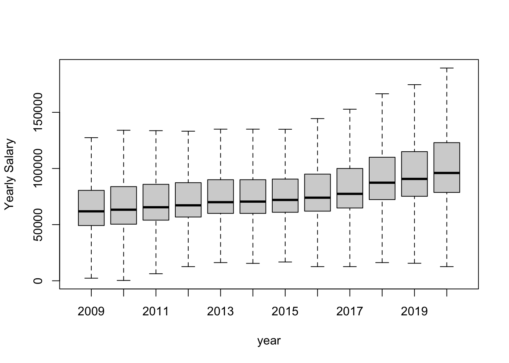
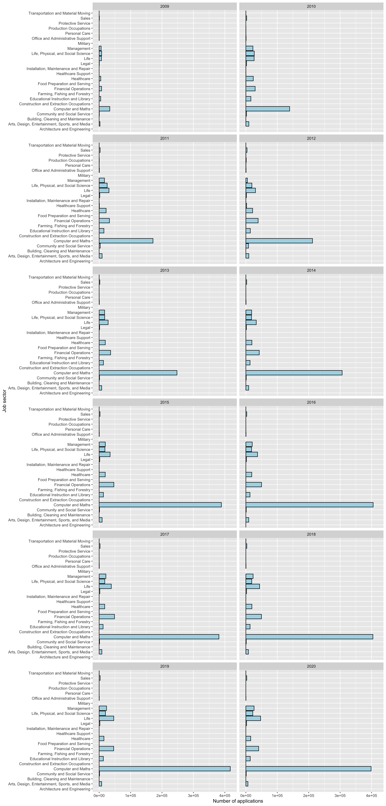
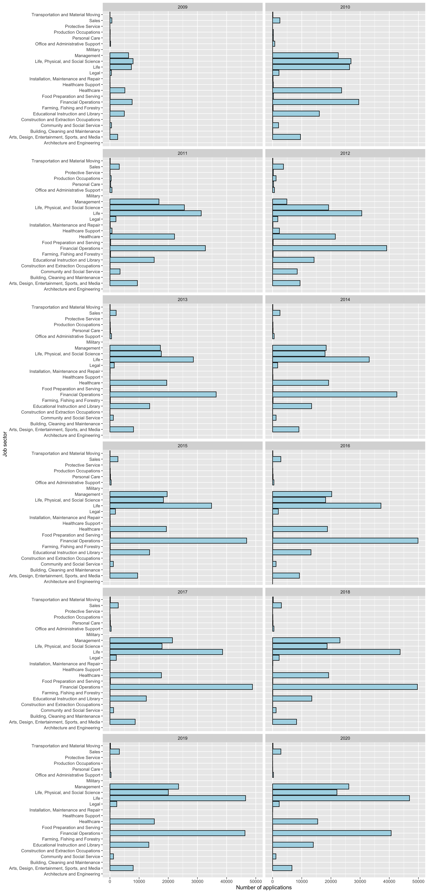
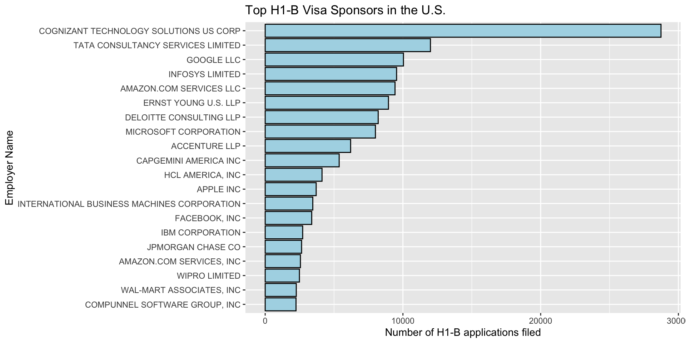
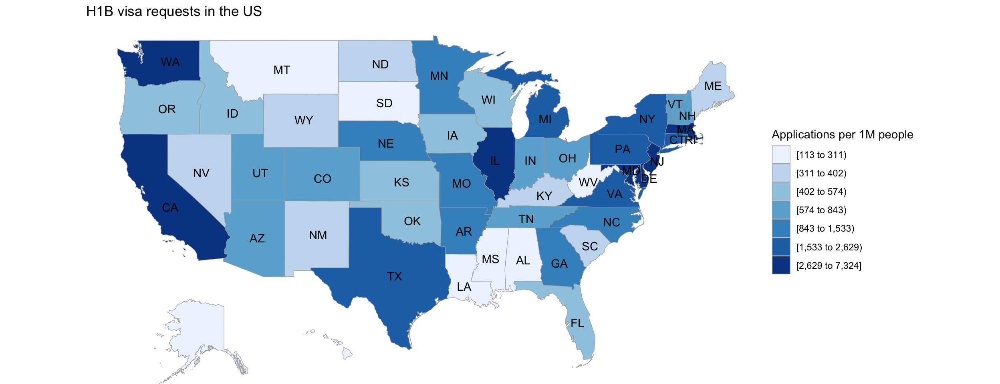
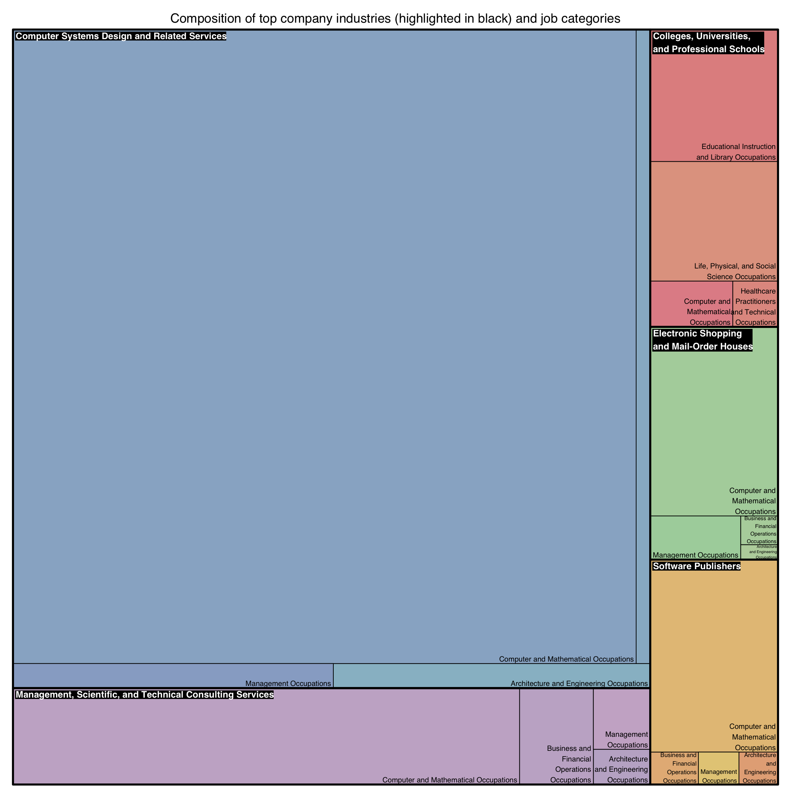
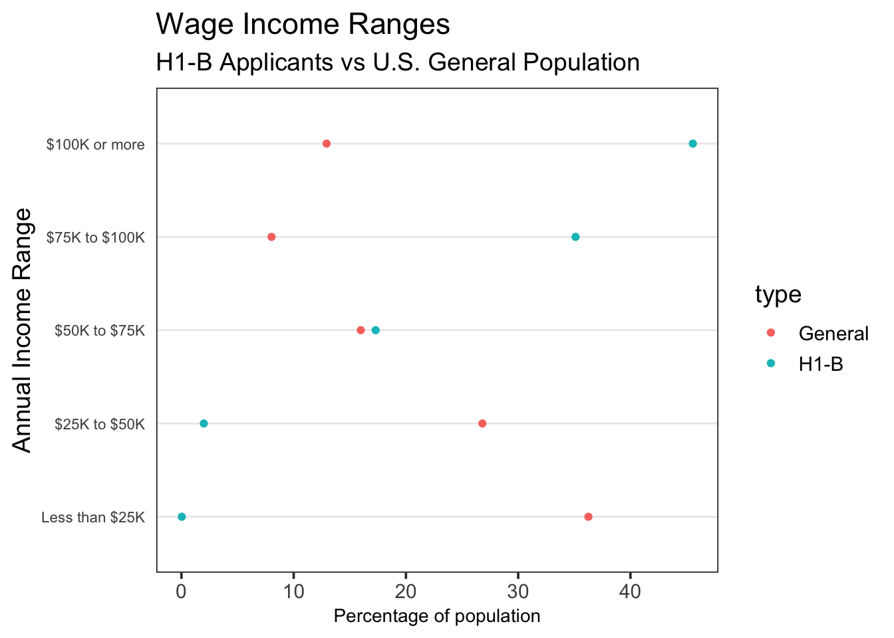

Chapter 5 Results
5.1 Analysis through time
5.1.1 Number of applications per year
We will now investigate how the number of applications vary each year. In this way we find out whether US is a popular option for immigrant workers and what is the trend of the last years

There is a big increase in the number of applications from 2009 to 2016. After that, number of applications fluctuate and they reach 590000 applicants in 2020. This indicates that US gets more and more popular option for skilled workers that want to migrate, probably because of the attractive salaries that increase year by year, which is further analyzed in the next figure
5.1.2 Annual salary boxplot
As we saw in the previous graph, US is a popular option among immigrant workers. This could be due to the high salaries that US companies pay. We will investigate how salaries vary per year to see if there is a connection

There is an upward trend in the 25th quartile, median, 75th quartile and maximum salary from 2009 to 2020. We can’t say anything about the minimum values because of outliers, even though salaries equal to 0 were removed. We can’t remove a bigger value, because each state has different rate of pay and a minimum salary to filter out isn’t a clear cut
5.1.3 Applications by subject
We now want to find out which subject provides the most opportunities for an H-1B visa. For this reason, we draw the number of applications for each sector, each year

Jobs related to computer science and mathematics are the most famous in the H-1B applications every year. There is an increasing trend in the applications of this field from 2009 to 2015 After that the number of applications remains constant at 400000 applications per year. This also applies for the rest of the sectors and confirmed by the number of applications vs year graph
5.1.4 Applications by subject with Computer Science and Maths removed
As we saw, the vast majority H-1B applications are from people working on jobs related to Computer Science and Maths. We will redraw the graph without these applicants to have a clearer picture about the rest of the job sectors

Financial operations is the second most famous job in the H-1B applications every year. There is an initial increase in the number of applications between 2009 and 2012. In 2013 the number of applicants is similar to that of the previous year, followed by an increase in 2014. From 2015 to 2019 total applications in this sector remain constant with around 480000 applicants. In 2020 there is a reduction, with total 400000 applicants. It is worth mentioning that number of applications for each sector between 2016 and 2020 are very similar. This may be because there is a fixed number of positions for international workers that they are applying for H-1B visa. For the rest of sectors there is an increase between 2009 and 2011. In 2011 there is a big decrease in the management and community with social services related job applications. For the next 3 years there is a slight fluctuation in each sector
5.2 Analysis of most recent year: 2020
5.2.1 Top Employers
Lets look at the top 20 Companies overall in 2020 filing H1-B Visa applications. This means across all industries and jobs.

The top 20 is dominated by Tech and Consulting companies (primarily). However, it’s worth noticing that these companies are also very big in terms of their worth and more importantly, their number of employees. For example, Cognizant has 289.000 employees, Infosys 242.000, Tata Consultancy has 470.000, Google 135.000. Nevertheless, there are large companies in all industries, but for some reason tech and consulting stand out. For a future work, it might be interesting to normalize these frequencies by the company size to get a better sense of the probability that a company sponsors an H1B visa for an employee.
5.2.2 Geographical analysis
Now we want to see if there are any geographical patterns. To do this we calculated the number of H1-B application per 1M people and plot 
It looks that there are high concentrations on the coasts. Woud the percentage of immigrant population by state have something to do with this? Apparently, yes! After doing some research, we found that some of the top states by immigrant population (percentage) include:
- California (27%)
- New York (23%)
- New Jersey (22%)
- Texas (17%)
- Washington (15%)
- Massachusetts (17%)
- Illinois (14%)
- Maryland (15%)
On the other hand, the states with least immigrants are:
- Montata (2%)
- Mississippi (2.5%)
- Alabama (3%)
- South Dakota (4%)
Of course, immigration is not a perfect predictor for the number of applications. There are other factor into play like the presence of popular industries (e.g., Tech, Finance, Consulting). Another factor may be the wealth of the state measured by houshold income which would help explain some of the variance. For example, Nevada and Arizona are in the top 15 of the states with most immigrants but their percentage of applications is not as high as expected, nonetheless, these states are in the 28th and 30th place according to household income. On the other hand, the top “richest” states agree with the ones with highes immigrants and highest visa applications.
Note: data about immigrant population is based on: https://en.wikipedia.org/wiki/List_of_U.S._states_and_territories_by_immigrant_population and https://worldpopulationreview.com/state-rankings/states-with-the-most-immigrants. Data about household income was found here: https://en.wikipedia.org/wiki/List_of_U.S._states_and_territories_by_income
5.2.3 Employer Industry and Job Category Composition
How is the demand for international workers across different indusrties? In other words, what job categories are in high demand for the different industry sectors? Here we present a treemap that shows the top 4 job categories for the top 5 industry sectors. We can’t show all jobs and industries for visualization purposes.

It is very clear that industries belonging to the STEM (Science, Technology, Engineering and Mathematics) fields dominate in visa applications. This is great news for Data Scientists like us because it means companies in our industry are more than happy to sponsor us (what a relief). Additionally, the top job categories in each industry sector remain pretty much the same:
- Computer and Mathematical Occupationis
- Business and Financial Operations Occupations
- Management Occupations
- Architecture and Engineerring Occupations
Nevertheless, there is something surprising: the third industry with most H1-B applications is Colleges, Universities and Professional Schools. This means that these sectors are very interested in international workers and would then be great places to apply for jobs. We couldn’t resist to give a peek at the top employers in this last sector:
## # A tibble: 1,315 x 2
## EMPLOYER_NAME Frequency
## <chr> <int>
## 1 MAYO CLINIC 587
## 2 UNIVERSITY OF MICHIGAN 484
## 3 JOHNS HOPKINS UNIVERSITY 351
## 4 THE LELAND STANFORD, JR UNIVERSITY 344
## 5 TRUSTEES OF THE UNIVERSITY OF PENNSYLVANIA 327
## 6 COLUMBIA UNIVERSITY 309
## 7 UNIVERSITY OF CALIFORNIA, SAN FRANCISCO 290
## 8 UNIVERSITY OF PITTSBURGH 252
## 9 EMORY UNIVERSITY 251
## 10 HARVARD UNIVERSITY 249
## # … with 1,305 more rowsWe are so proud to see Columbia University at the top! We are at a great place to learn but also with substantial chances of employment.
5.2.4 Wage analysis
How are H1-B Visa applicants being paid? Our hypothesis is that they should be getting a more than average wage because this visa is intended for “speciallized workers”.
We downloaded the latest personal income information provided by the U.S. Census in order to compare the general US citizen wages with that of the people applying for H1-B visas. Let’s look at the data. Note, this file was cleaned to extract the lower and upper wage bounds
These income ranges are too specific for this analysis so we decided to group by ranges of $25K, except for the last category which is still 100K or more.
Let’s see how different are wage groups for H1-B applicants vs the general population.

The differences in salary are stagering! The U.S Nation median wage is in the 25K-50K range while that of H1-B applicants is in the 75K-100K range. This is most likely a reflection of the kind of people which H1-B visas are intended for: High-Skilled speciallized workers with at least a bachelor’s degree. Furthermore, notice that the percentage of H1-B applicants that earn less than 50K is minimal. This could mean that “unspecialized” workers are not likely to have “low” wages, or that speciallized workers at low-paying are not willing to sponsor visas because they don’t have the financial means (which is why they are paying low wages).
5.3 Summary
Given the upward trend in H-1B visas, we can conclude that working in US is an attractive option for foreigners. This means that the chances of acquiring an H-1B visa are shrinking, because the number of visa approvals each year is limited. Additionally, the salary of the immigrant employees increases year by year and at a higher rate than US general population (source). Such behavior might explain the increased interest in internationals that want to work in the US.
It is clear that the technology and consulting sectors need highly skilled workers and are willing to sponsor H-1B visas in exchange for talent. This is not easy because sponsoring this type of visa can cost an employer about $5,000 per employee. While this speaks highly of these industries, it also suggests that there is a shortage of people who can work in them. Such behavior is also present in the academic and health care industries. Our findings, indicate that someone who is specialized in the technology and consulting sectors has more opportunities finding an employer to sponsor their visa.